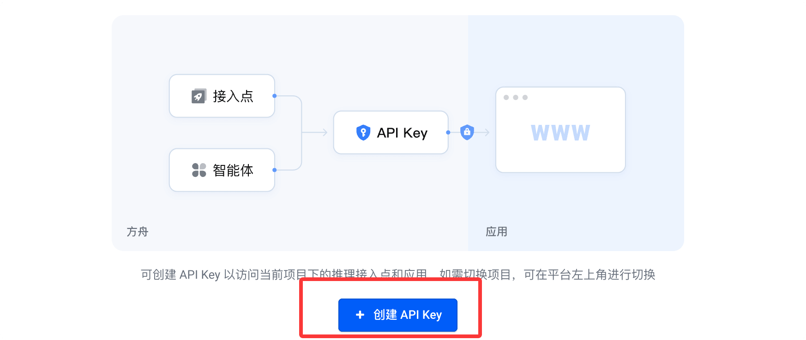
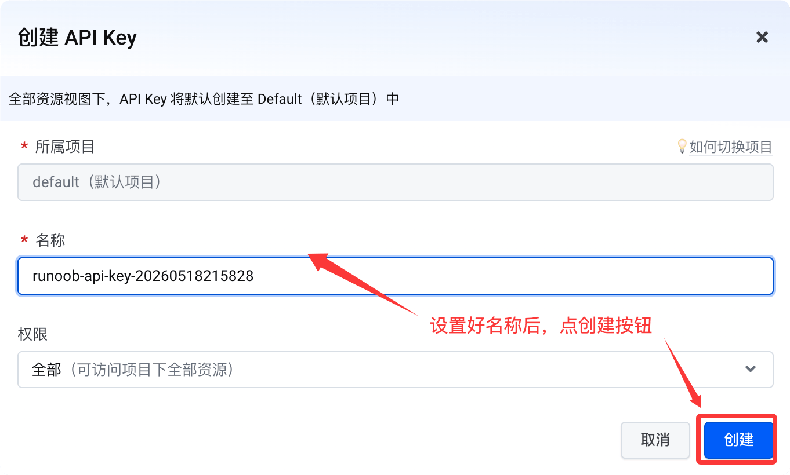
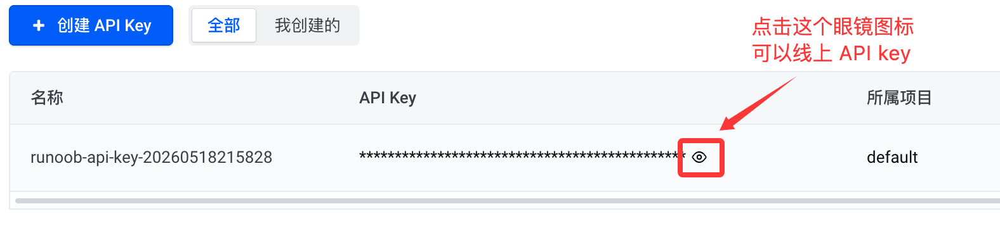
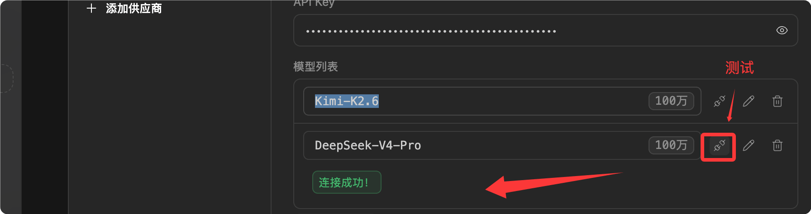
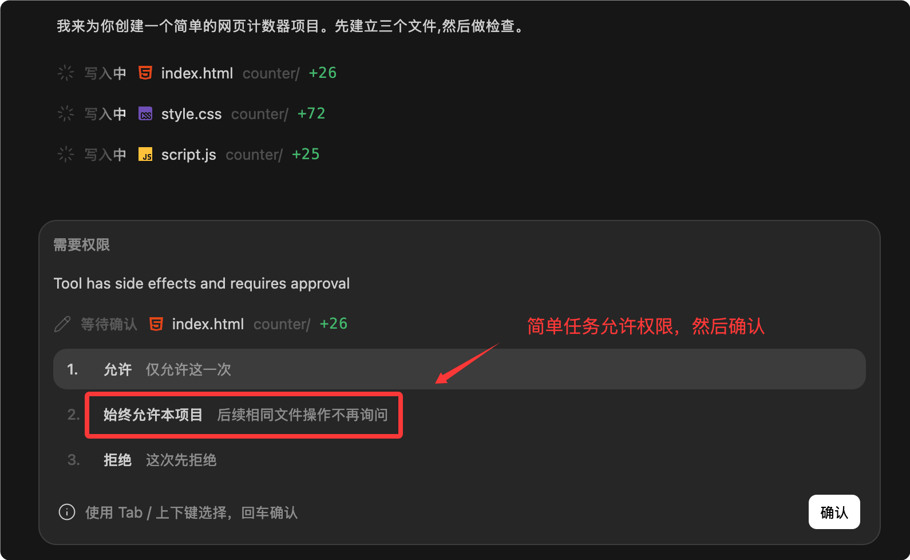
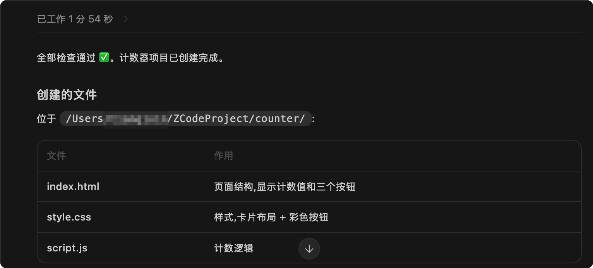
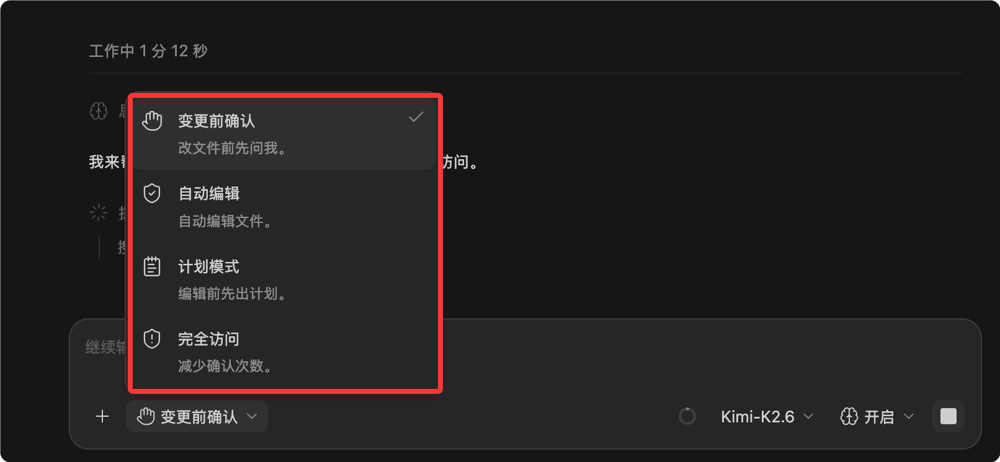

ZCode 入門チュートリアル
ZCode は智譜（Zhipu）がリリースした開発者向けエージェント開発環境であり、Agentic Development Environment（略称 ADE）とも呼ばれます。従来のエディターとは異なり、プロジェクトを深く操作できる AI アシスタントを搭載しており、プロジェクトの閲覧、ファイルの修正、コマンドの実行、コード変更の整理ができます。
ZCode は AI エージェントを実際のプロジェクトに接続し、要件分析、コード修正、テスト、コードレビュー、リリース前チェックといった開発作業をワンストップで完結できます。
一般的な AI ツールは断片的なコードしか生成できませんが、ZCode は自然言語で完全な開発タスクを指示できるため、自然言語で開発を進めたいユーザーに適しています。

ZCode の中心は単なるチャットではなく、開発目標に沿って1つのタスクを継続的に推進することです。
| 概念 | 説明 | 適したシーン |
|---|---|---|
| ZCode | AI エージェント向けの開発環境。 | 自然言語で実際のプロジェクト開発を進めたい。 |
| ZCode Agent | タスクの理解、コンテキストの読み取り、コードの修正、結果の検証を担当するエージェント。 | 複雑な要件の分解、コード生成、デバッグ、テスト。 |
| Long Horizon Task | 期間が長く、ステップが多い開発タスク。 | モジュールのリファクタリング、複雑なバグ修正、完全な機能の実装。 |
| ワークスペース | ZCode がプロジェクトファイル、ターミナル、Git 状態、タスクコンテキストを処理する場所。 | 既存のプロジェクトを開くか、ディレクトリ内に新規プロジェクトを作成する。 |
ZCode は何に向いているか
ZCode は連続したコンテキストを必要とする開発作業に適しており、ファイルの読み取り、プロジェクト構造の理解、コマンドの実行、変更完了後の要約の提供ができます。
このような能力は一度きりのQ＆Aだけでなく、実際のプロジェクトに適しています。
| タスクの種類 | ZCode にできること | 典型的なプロンプト |
|---|---|---|
| 新機能開発 | 要件に応じてプロジェクト構造を確認し、関連ファイルを作成・修正する。 | このプロジェクトにログインページを追加して、既存のルーティングに接続してください。 |
| バグ修正 | エラーの原因を特定し、コードを修正し、検証コマンドを実行する。 | モバイル端末でボタンクリック後にページがちらつく問題を修正してください。 |
| コード理解 | モジュール間の関係を整理し、ある機能のエントリーから実装までの呼び出しチェーンを説明する。 | このプロジェクトの支払いフローがどのように進むのか説明してください。 |
| コードレビュー | 変更のリスクを確認し、インラインでの提案や改善の方向性を示す。 | 現在の変更をレビューしてください。特に回帰リスクを重点的に確認してください。 |
| リリース準備 | changelog の生成、release note の整理、Git 状態の確認。 | 最近のコミットに基づいてリリースノートの下書きを生成してください。 |
ZCode のインストール
ZCode 中国語公式サイトに入ると、ホームページのダウンロード入口をクリックできます。
公式サイトのURLはhttps://zcode.z.ai/cn。
公式サイトにはダウンロード可能なバージョンが表示され、Windows、macOS、Linux に対応しています。通常、公式には現在のシステムのダウンロードボタンが表示されます。

ダウンロード後、インストールをクリックするだけです。
インストール後の基本準備
初回起動時に「初回起動設定」ページが表示され、完了後、左下の「接続して使用」をクリックしてログインページに入ります。

モデルサービスを使用するには、API Key またはCoding Plan関連設定を完了する必要があります。ログイン後に設定ページで設定することもできます。

公式の無料枠は現在非常に限られており、基本的に足りないため、以下の Coding Plan プランを推奨します。
次に、以下のByteDance Ark（字节方舟）の Coding Planを例に設定します。方舟（Ark）へアクセスしますCoding Plan キャンペーン必要に応じてプランを購読します。使用量が少なければ Lite バージョンで十分です。使用量が非常に多い場合は Pro バージョンを使用できます。
購入が成功したら、クリックしますAPI Key を作成：

その後、「作成」ボタンをクリックします。

下の目のアイコンをクリックすると API Key を表示できます。使用するときにコピーするだけでOKです。

ツールごとに設定する Base URL は、互換するプロトコルによって異なります。
- Anthropic API プロトコル互換のツール：https://ark.cn-beijing.volces.com/api/coding
- OpenAI API プロトコル互換のツール：https://ark.cn-beijing.volces.com/api/coding/v3
ここでは選択しますhttps://ark.cn-beijing.volces.com/api/coding、API key はご自身のものを設定し、モデルリストには複数のモデルを追加できます。ここにKimi-K2.6を入力し、他のモデルを追加することもできます、例えばDeepSeek-V4-Pro：

を追加することもできます。追加後、モデルが利用可能かテストできます：

ホームページのダイアログ右下隅で、追加したモデルを確認できます。

ZCode には、API Key 設定、使用統計、ユーザーフィードバック、サポートなどのページがあります。

初めての ZCode 利用
簡単なプロジェクトから始めて、ZCode にブラウザ上で動くミニゲームを作成させたり、既存プロジェクトのディレクトリ構造を説明させたりできます。
これにより、ZCode の動作方式をすぐに理解できます。
ワークスペースを開く／作成する
ワークスペースは、ZCode が現在処理しているプロジェクトディレクトリと理解できます。
既存のプロジェクトディレクトリを開くことも、空のディレクトリで新しいプロジェクトを開始することもできます。
ZCode はこのディレクトリを中心に、ファイルの読み取り、コマンドの実行、変更の管理を行います。
タスクを新規作成
ZCode では、タスクはエージェントの作業を推進する基本単位です。
公式サイトの例では、自然言語でタスクを記述する方法が示されています。
ページには、タスクを新規作成するためのショートカットキーも表示されています。⌘N。
タスク新規作成の例：
スマート五目並べのウェブゲームを作成し、盤面、プレイヤーの石置き、勝敗判定、および簡単なコンピューター対戦相手を備える。

実行プロセスを観察する
タスクが開始されると、ZCode は目標に基づいてプロジェクトを分析し、段階的に進めます。
タスクの進捗、実行ログ、ファイル変更、ターミナル出力、Git 状態を確認できます。
AI が生成したコードをコピーするだけよりも信頼性が高いです。コードを実際のプロジェクトに戻して検証できるからです。
| インターフェース領域 | 役割 | 初心者が注目すべき点 |
|---|---|---|
| タスク進捗 | 現在のタスクの分解と完了状況を表示します。 | エージェントが目標に沿って進んでいるか確認します。 |
| ターミナル出力 | コマンド実行結果を表示します。 | エラーがないか、検証コマンドが成功したかを確認します。 |
| ファイル変更 | 追加、修正、削除されたファイルを表示します。 | 変更が期待どおりか確認します。 |
| Git 状態 | 現在のワークスペースのバージョン管理状態を表示します。 | コミット前に、必要な変更のみが含まれているか確認します。 |
完全な入門例
以下では、簡単なフロントエンドプロジェクトを用いて、ZCode にタスクを指示する方法を説明します。
この例はバックエンドに依存せず、初心者が流れを理解するのに適しています。
例
要件：
1. HTML、CSS、JavaScript の3つのファイルを使用する。
2. ページに現在のカウント値を表示する。
3.「+1」「-1」「リセット」の3つのボタンを提供する。
4. スタイルはシンプルで、初心者が読みやすいようにする。
5. 完了後、必要なチェックを実行し、作成したファイルを教えてください。
このプロンプトは、ZCode に対して、何を作成するのか、どのファイルを使用するのか、どの機能を含めるのか、そして完了後に結果を説明する必要があるのかを明確に指示します。
プロンプトが具体的であればあるほど、Agentの実行は期待どおりになりやすくなります。

すると権限情報が表示されるので、権限を許可して「確認」をクリックするだけです：

生成される可能性のあるプロジェクト構造
空のディレクトリでこのタスクを実行すると、ZCodeは以下のようなファイル構造を作成する可能性があります。
counter-demo/ ├── index.html ├── styles.css └── app.js

ソースコードを確認できます：

ソースコードの表示例：

ZCode に渡すプロンプトをうまく書く方法
ZCodeは自然言語を理解できますが、だからといってプロンプトが短ければ良いというわけではありません。
良いプロンプトには、目標、範囲、制約、合格基準を含めるべきです。
そうすることで、Agentはより安定して計画を立て、実行できます。
| 構成要素 | 説明 | 例 |
|---|---|---|
| 目標 | 最終的に何を得たいのかを説明します。 | ユーザー設定ページを追加する。 |
| 範囲 | どの部分を変更すべきか、どの部分を変更すべきでないかを説明します。 | フロントエンドのページのみ変更し、バックエンドのAPIは変更しない。 |
| 制約 | 技術スタック、スタイル、互換性の要件を説明します。 | 既存のコンポーネントライブラリを使用し、依存関係を追加しない。 |
| 合格基準 | 完了後に成功かどうかをどのように判断するかを説明します。 | npm test が成功し、モバイル端末でレイアウトが正常であること。 |
例
範囲：
- ログインページ関連のファイルのみ変更する。
- バックエンドのAPIは変更しない。
- サードパーティの依存関係は追加しない。
要件：
- 既存のビジュアルスタイルを維持する。
- 375px 幅のスマートフォン画面に対応する。
- 修正後、変更したファイルを説明してください。
- プロジェクトにテストまたはチェックコマンドがあれば、実行して結果を報告してください。
「最適化して」とだけ書かないでください。そのようなプロンプトは範囲が広すぎて、Agentがあなたが本当に望んでいることを判断するのは困難です。
よく使うワークフロー
ZCodeの強みは、開発プロセスを一続きにつなげられることです。
タスクを要件の記述からコード修正、さらに検証とまとめまで進めることができます。
ゼロから機能を作成する
新機能を作成するときは、まず機能の境界を明確に説明してください。
プロジェクトに既存の技術スタックがある場合は、ZCodeに既存の書き方に従うよう要求することも必要です。
例
要件：
- プロジェクトで既に使用されているルーティング方式を使用する。
- 既存のページレイアウトコンポーネントを再利用する。
- ページにはタイトル、紹介、連絡先の3つのセクションを含める。
- 依存関係を追加しない。
- 完了後、追加および変更したファイルを列挙してください。
既存コードの理解
慣れないプロジェクトを引き継いだときは、すぐにコードを変更するのではなく、まずZCodeに構造を説明させることができます。
これにより、誤って変更するリスクを減らすことができます。
例
現在のプロジェクト構造を読んで、次の点を説明してください：
- アプリケーションのエントリポイントはどこか。
- ルーティングはどこで定義されているか。
- APIリクエストのラッパーはどこにあるか。
- ビルドコマンドとテストコマンドはそれぞれ何か。
コミット前の確認
コードをコミットする前に、ZCodeに現在の変更をチェックさせることができます。
これにより、漏れているファイル、潜在的なリグレッション、テスト不足を発見できます。
例
重点的にチェック：
- 明らかなバグがあるか。
- 既存機能を壊していないか。
- 未使用の変数やデバッグコードがないか。
- テストを追加する必要があるか。
まず問題のリストを提示してください。ファイルを直接変更しないでください。
安全確認と権限
ZCodeは、重要なコマンド、ファイル変更、高権限操作の前に確認プロセスに入ります。これにより、Agentがあなたの知らないうちに危険な操作を実行するのを防げます。

コマンドを実行する前に確認内容を読み、許可するかどうかを判断できます。
| 操作の種類 | 確認が必要な理由 | 推奨される対応 |
|---|---|---|
| ファイル変更 | プロジェクトのコードを変更します。 | ファイルパスと変更対象が正しいか確認します。 |
| ファイル削除 | データ損失を引き起こす可能性があります。 | 削除前にファイルの内容を確認し、必要に応じてバックアップします。 |
| コマンド実行 | コマンドは依存関係のインストール、サービスの起動、環境の変更を行う可能性があります。 | コマンドの内容を確認し、知らない高リスクなコマンドを実行しないようにします。 |
| Git操作 | コミット履歴やリモートリポジトリに影響を与える可能性があります。 | コミットとプッシュの前に git status を確認します。 |
特定のコマンドが安全かどうか不明な場合は、直接実行を許可するのではなく、まずZCodeにコマンドの内容を説明させてください。
よく使うコマンドと確認方法
ZCodeはターミナルを使用してプロジェクトのコマンドを実行できます。
具体的なコマンドはプロジェクトの技術スタックによって異なります。
以下に、公式サイトの例や一般的な開発シーンで登場するコマンドをいくつか挙げます。
| コマンド | 機能 | 例 |
|---|---|---|
| pwd | 現在のディレクトリを表示します。 | ZCodeの現在のターミナルがプロジェクトディレクトリにあるか確認します。 |
| git status --short | 簡潔な形式でGitの変更を確認します。 | コミット前にどのファイルが変更されたか確認します。 |
| node --check app.js | JavaScriptファイルの構文をチェックします。 | app.js に構文エラーがないか検証します。 |
| npm test | プロジェクトのテストを実行します。 | JavaScriptまたはフロントエンドプロジェクトに適しています。 |
| npm run build | プロジェクトのビルドを実行します。 | リリース前にプロジェクトが正常にパッケージ化できるか確認します。 |
$ git status --short M src/App.js M src/styles.css
上記の出力は、2つのファイルが変更されたことを示しています。
コミット前に、これらの変更がすべて期待どおりであることを確認してください。
上級機能の概要
デスクトップでのタスク実行に加えて、ZCodeのドキュメントにはいくつかの高度な機能も記載されています。
初心者の段階で一度にすべてを習得する必要はありませんが、それらがどのような問題を解決するかを最初に知っておくことはできます。
| 機能 | 説明 | どのようなときに使うか |
|---|---|---|
| Remote Control | リモートでAgentタスクをフォローアップまたは制御します。 | タスクに時間がかかり、パソコンから離れた後も進捗を確認したい場合。 |
| Bot Channel | 飛書（Lark）またはWeChat Botを通じてタスクをトリガーし、進めます。 | チームコラボレーション、モバイルでのフォローアップ、リモートでの追加指示。 |
| Skill | 特定のタスクに専用の能力やプロセスを提供します。 | 同じ種類のタスクを繰り返し処理する場合。例：セキュリティ監査、ドキュメント生成、テスト実行。 |
| MCPサーバー | Agentに外部ツールやデータソースを接続します。 | データベース、ナレッジベース、内部システム、専用ツールへの接続が必要な場合。 |
| サブエージェント | 異なるAgentに異なるサブタスクを処理させます。 | 大きなタスクで並行探索、レビュー、または分担処理が必要な場合。 |
初心者によくある質問
以下に、ZCodeを使い始めたばかりのときに遭遇しやすい問題をまとめます。
ZCode は私のプロジェクトを自動で勝手に変更しますか？
ZCodeの重要な操作は確認プロセスに入ります。
許可する前に、変更しようとしているファイルと実行しようとしているコマンドを確認してください。
プロジェクトを読むだけにしたい場合は、プロンプトに「ファイルを変更しないでください」と明示してください。
ZCode に一度に多くのことをやらせるべきですか？
初心者が最初から大きすぎるタスクを与えることはお勧めできません。
より良い方法は、タスクを小さく分割することです。
例えば、最初にプロジェクト構造を理解させ、次に特定のモジュールを修正させ、最後に検証を実行させます。
タスクが失敗した場合はどうすればよいですか？
まずターミナルの出力とエラーメッセージを確認します。
次に、ZCodeにエラーに基づいて修正を続けさせます。
焦ってまったく別のタスクをやり直さないでください。コンテキストが失われる可能性があります。
いつ手動による確認が必要ですか？
ビジネスロジック、権限、セキュリティ、決済、データ削除、リリース操作に関わる場合は、手動チェックを行うべきです。
AIは問題発見を支援できますが、最終的な責任は依然として開発者にあります。
学習アドバイス
ZCodeを学ぶ最良の方法は、コマンドを暗記することではなく、小さなタスクから練習を始めることです。
まずそれを使って簡単なページを作成し、次に生成されたコードを説明させてみてください。
次に、小さなバグを修正させ、それがどのようにファイルを読み取り、コードを修正し、結果を検証するかを観察してください。
このタスク駆動型の開発方法に慣れてきたら、コードレビュー、リリース準備、Remote Control、Skillなどの機能を段階的に使用してください。
その他の拡張機能ZCodeをプロジェクトを操作できる開発パートナーとして扱い、単に質問に答えるだけのチャットボットとしては扱わないでください。そうすることで、その価値をより発揮しやすくなります。